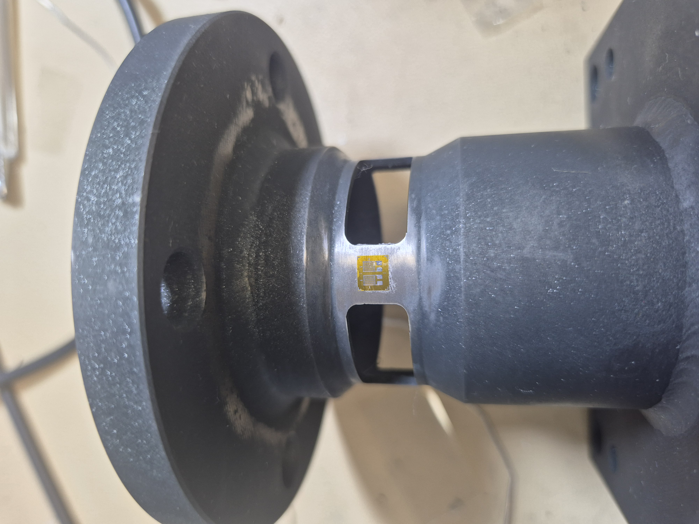
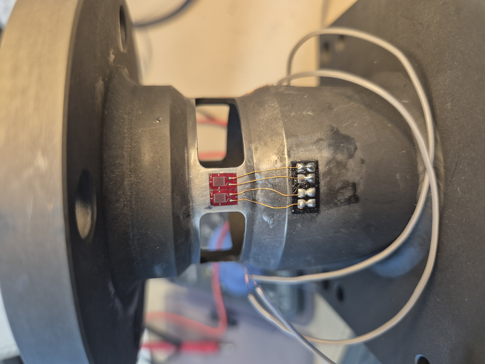
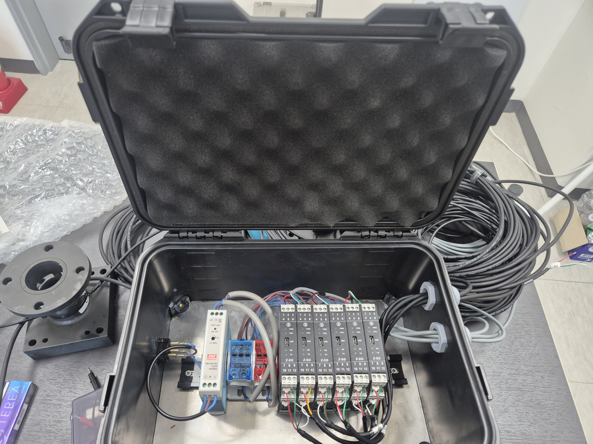
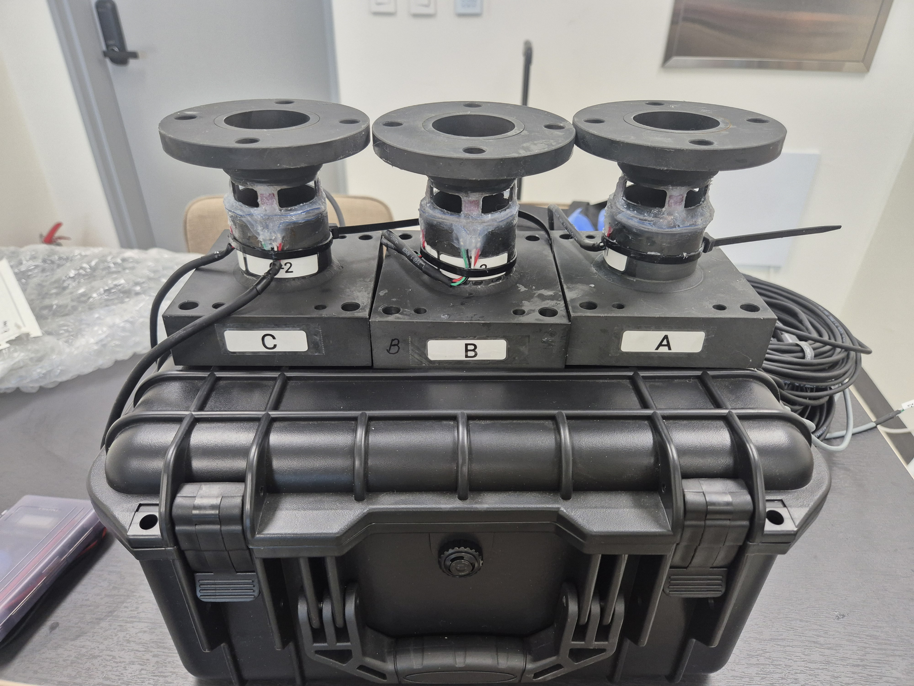
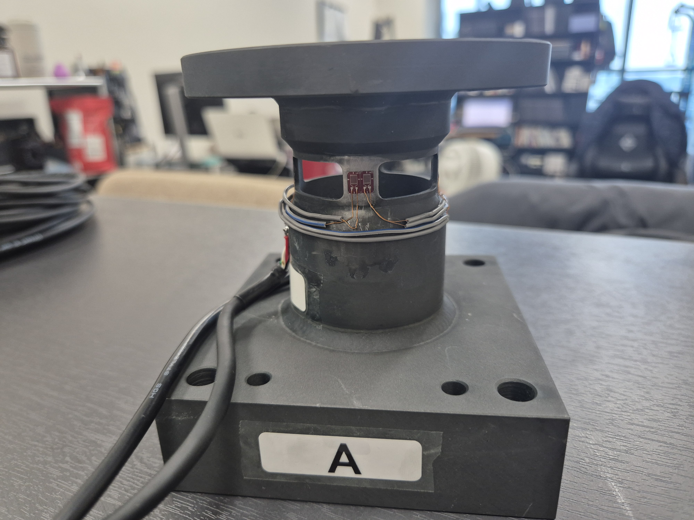

풍력터빈 시험 모형의 응력 측정 의뢰를 수행한 사례입니다. 스트레인게이지 부착 → 풀브릿지 구성 → 신호 점검 → 이동식 스트레인 앰프 박스 제작 → 납품까지 전 과정을 씨앤디테크가 담당하였습니다.
풍력터빈(Wind Turbine) 시험 모형에 대한 구조 응력 측정 의뢰 사례입니다. 고객사는 터빈 모형 시험 중 실제 작용하는 응력 데이터를 실시간으로 취득해야 했습니다.
씨앤디테크는 제품 센서화 방식으로 접근하여, 터빈 모형의 구조체에 직접 스트레인게이지를 부착하고 풀브릿지로 구성한 후, 현장에서 바로 운용 가능한 이동식 스트레인 측정 시스템을 제작해 납품하였습니다.
스트레인게이지 선정부터 완성형 시스템 납품까지 씨앤디테크가 원스톱으로 진행하는 측정 지원 서비스의 대표적인 사례입니다.
스트레인게이지 부착부터 완성형 스트레인 측정 시스템 납품까지
터빈 모형 구조체의 측정 위치를 선정하고 표면을 연마·세척한 후, 목적에 적합한 스트레인게이지를 선정하여 정밀 부착합니다. 접착제 선택(CA·에폭시)부터 경화, 외관 검사까지 표준 부착 절차를 준수합니다.
게이지 4장을 휘트스톤 브릿지 4개 암(arm)에 배치하는 풀브릿지(Full Bridge) 회로로 구성합니다. 풀브릿지는 하프브릿지 대비 감도 2배, 온도 자동 보상, 굽힘·축력 분리 효과가 있어 응력 측정 정확도가 가장 높은 구성입니다. 브릿지 결선 후 케이블을 정리하여 앰프 연결 준비를 완료합니다.
브릿지 저항 균형(밸런스), 절연저항, 출력 선형성을 확인합니다. 알려진 하중을 가해 측정값과 이론값을 비교하는 간이 교정(Calibration)을 수행하여 측정 신뢰성을 검증합니다.
현장에서 즉시 운용 가능한 이동식 스트레인 측정 시스템을 제작합니다. 스트레인 앰프(증폭기)·전원부·커넥터·출력 단자를 하나의 케이스에 통합하여, 케이블 연결 후 바로 측정이 가능한 완성형 박스로 제작합니다.
완성된 스트레인 측정 시스템의 전체 동작을 최종 확인하고 고객사에 납품합니다. 운용 매뉴얼, 교정 성적서, 게이지 사양서를 포함하여 인도합니다. 납품 후 현장 적용 초기 기술 지원도 제공합니다.
스트레인게이지 부착·풀브릿지 구성·이동식 앰프 박스 제작 실제 사진





스트레인게이지 부착 → 풀브릿지 구성 → 이동식 앰프 박스 제작 전 과정
풀브릿지 구성 완료 후 스트레인 앰프 신호 확인 영상
씨앤디테크는 제품 센서화부터 완성형 스트레인 측정 시스템 납품까지 단일 창구로 진행합니다. 응력 측정이 필요한 모든 구조체에 적용 가능합니다.
스트레인게이지 선정·부착·풀브릿지/하프브릿지 구성
제품·구조물 센서화 — 로드셀 없이 구조체를 센서로
이동식 스트레인 앰프 박스 제작·납품
응력 측정·데이터 취득·결과 분석 리포트
현장 출장 측정 지원 서비스
잔류응력(ASTM E837), PCB 응력, 토크·진동 전 분야
측정 목적, 구조물 형태, 운영 환경을 알려주시면 최적 구성과 견적을 제안드립니다.
풀브릿지 구성·제품 센서화·스트레인 측정 시스템에 관한 Q&A
풀브릿지는 스트레인게이지 4장을 휘트스톤 브릿지 4개 암(arm) 모두에 배치하는 구성입니다. 하프브릿지(2장) 대비 출력 감도 2배, 온도 자동 보상, 굽힘·축력 성분 분리가 가능하여 구조 응력 측정에 가장 정확한 방법입니다. 시험 모형 응력, 토크, 하중 측정에 주로 사용합니다.
제품 센서화는 측정 대상 구조물에 직접 스트레인게이지를 부착하여 하중·응력·토크를 측정하는 방식입니다. 별도 로드셀 없이 구조체 자체가 센서가 됩니다. 기존 구조물을 훼손하지 않고 적용 가능하며, 특수한 형상이나 복잡한 하중 조건에도 대응할 수 있습니다.
스트레인 측정 시스템은 ①스트레인게이지(센서) → ②앰프(신호 증폭) → ③DAQ(데이터 수집) → ④소프트웨어(분석)로 구성됩니다. 씨앤디테크는 현장 환경에 맞는 이동식 앰프 박스 제작과 DAQ 구성을 포함한 완성형 턴키 시스템으로 납품합니다.
씨앤디테크는 스트레인게이지 선정·구매·부착·풀브릿지 구성·케이블 작업·신호 검증·앰프 설정·데이터 취득·결과 해석까지 전 과정을 원스톱으로 담당합니다. 납품형(시스템 제작 후 인도)과 현장 출장 측정 서비스 두 가지 방식으로 제공됩니다.